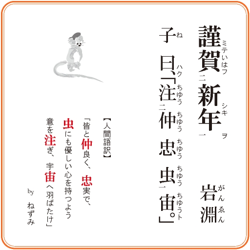
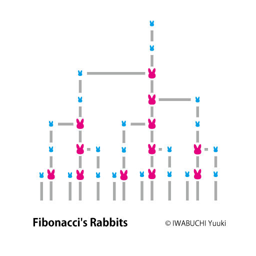
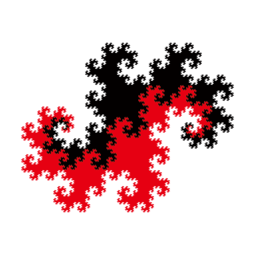
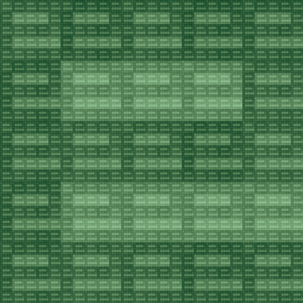

『bion（倍音）』
両対数極座標。
『waon（輪音）』
『bion』を同心円上に並べた形。
『3456』
正4面体、正8面体、正20面体、平面を上から見た形。
『star』
36°、72°、108°のいずれかを含む2等辺3角形で構成される形。
『Drop into...』
水は空気の中を落ち、空気は水の中を落ちている。

『Beer & Cocktail』
ビールとカクテル。
『DeltaΔPulse』
ギリシャ文字「Δ」とディラックのデルタ関数（グラフ描画時の上矢印「↑」）がかかっている。

『黄金木』
黄金比とフィボナッチ数。
『自畳』
QRコードには四字熟語が埋め込まれている。
『EnkiDo』
塩基配列アデニン（A）、チミン（T）、シトシン（C）、グアニン（G）。
『quark』
アップ、ダウン、チャーム、ストレンジ、トップ、ボトム。6種類のクォーク。

2005年春用デスクトップ壁紙。
これから先。
『蜘蛛の巣トッキング』
2010年度美術部新年展の作品。「大晦日に病院の待合室でクモがストッキングをゆっくりかぶった」というお題を頂いて制作。芥川龍之介の「蜘蛛の糸」をモチーフに、病院で生死をさまよう人間を表現。
『新合機』（しんごうき）
「合」という字には一つの屋根の下で人や物が 一緒になるという意味が込められていると考えます。 信号機を男女の出会いに見立てています。
『意味無いシリーズ』
ごみ箱にファイルをコピーしたら捨ててないのと同じ。三連休符は全休符と同じ。数式をいくつの括弧で括っても結果は同じ。
「ごみ箱にコピー」「三連休符」など、Twitter「造語録」(@zougoroku)ではこんな感じの造語をつぶやいてます。
『110のO』（ひゃくじゅうのおー）
百獣の王、ポンデライオン。Oの個数を数えてみよう。
『イタバサミーズ』
後津サリ、板場サミ、前野メリの3人はTwitter「造語録」(@zougoroku)から生まれたキャラクターです。
『回転』
回ってます。
『企業の価値』
高ければ高いほど高いのか。
『ジグソーQR』
QRコードのドットをジグソーパズルのピースにしてみました。ちゃんと携帯電話で読み取れます。試してみよう！
正方格子状のデータを記述するのは簡単ですが、正方格子の境目のデータを記述するのは一工夫要ります。
2003年度美術部新人展ポスター。
2003年度美術部新人展立看板。
2004年度美術部新歓展ポスター。
所属グループのフライヤー。
研究室行事の花見（2007年）のフライヤー。
『Fine CharActors』
金沢大学美術部新年展2009ポスターより。
「金沢大学美術部」のパーツを利用して「文字展」を作っている。
美術部新年展（2012年）のポスター用ロゴ
ロゴの作成には「LogoShader」を用いています。
AcaNeCo（金沢大学SNS）ロゴ（SNS版）。
AcaNeCo（金沢大学SNS）ロゴ（アカンサスポータル版）。


2004年年賀状。
「申」が猿のキャラクターに。
2008年年賀画像。
子曰、「注仲忠虫宙（ちゅうちゅうちゅうちゅうちゅう）。」
2011年年賀状。
2012年年賀状。
ドラゴン曲線を2つ重ねたTwindragon。
2013年年賀状。
自己加算フラクタルによる「巳」。